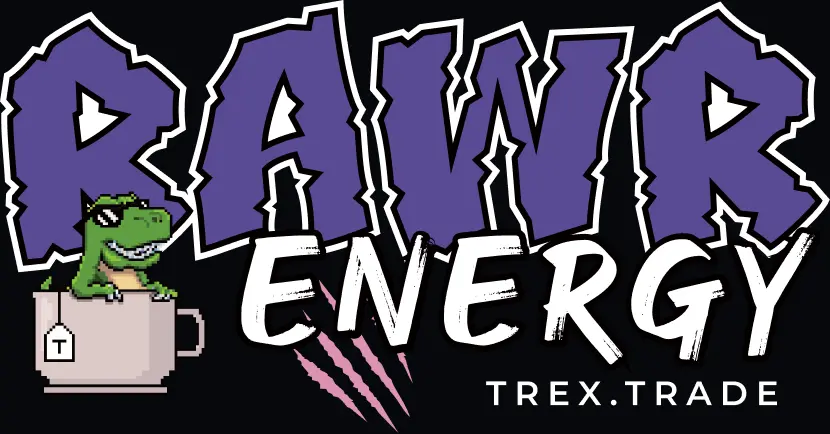
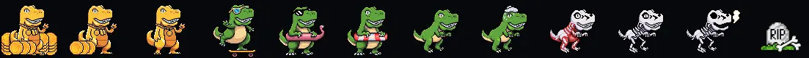

DESIGN SYSTEM / MASCOT / MOBILE FIRST DESIGN
Tea-REX
A trading terminal with a personality.
Tea-REX is Teahouse Finance's margin trading product, built on Sei. I was the sole designer on the project, responsible for everything — the sub-brand identity, design system, and every screen across desktop and mobile. Unlike typical products, Tea-REX carries a distinctive T-Rex design language throughout the entire experience, making it unique and memorable.



MASCOT
One animal, carried all the way down.
RAAAAAAAAWR
A mascot that only appears on the marketing site is just a sticker. Rex had to survive the places where brand usually gets stripped out for being unserious — a leverage slider, an error state, a wallet button, a tokenomics page.
Personality in the language. Never in the numbers.

Rex is the gauge.
Three states — thriving, uneasy, in trouble. You know how the position is doing before you read a single number.

Actions speak jungle.
Feed me adds collateral. Close exits. The verbs come from the world, not from the exchange. Every icon is pixel art — bones, potions, meat, gems. A trading terminal you'd recognize from a thumbnail.

DESIGN SYSTEM
Tokens first. Components second.
Primitive tokens hold the raw color. Semantic tokens hold the intent. Components only ever touch the second layer — so changing the brand color is one edit, not two hundred.
Primitive Scales Five hues · 50 → 950
Raw values. No component ever references these directly.

Semantic Tokens Surface · Border Every raw value gets a job.
surface/action doesn't say "purple" — which is why the theme can change without touching a component.

Component Library · Buttons · Tags · every state
Default, hover, loading, disabled — drawn, not described. Six tag variants share one shell.


Component Library · Buttons · Tags · every state
Default, hover, loading, disabled — drawn, not described. Six tag variants share one shell.

PRODUCT UX
Two features. Each a design problem.
Every feature in Tea-REX came with its own design challenge. Here are two — decisions about information hierarchy, interaction patterns, and state management, not just visual styling.

WHAT THIS ABILITY ACTUALLY IS
It started with Rex.
A trading terminal doesn't need a mascot. It does need a reason people remember it — and most of them look identical.
So I built outward from the character. Mobile first, because that's where people check positions. Then tokens, components, a type scale, every state drawn. Five product areas shipped without drifting apart. Rex lives in labels, empty states and rewards. He never touches a price or a liquidation warning.
That line is the system. Strip the dinosaur out and the components still work. Leave him in and you remember which app you were using.